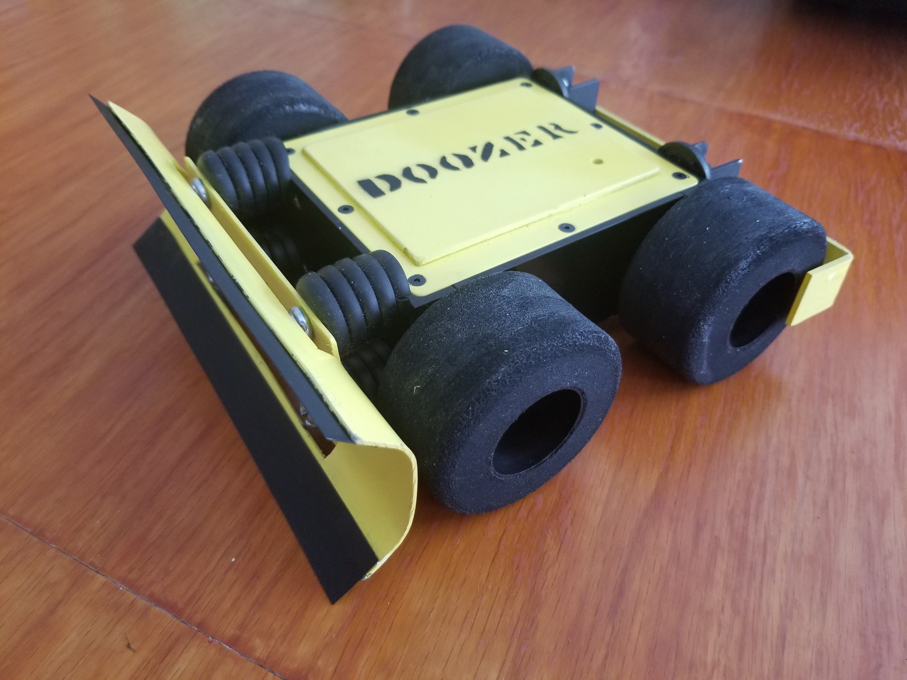
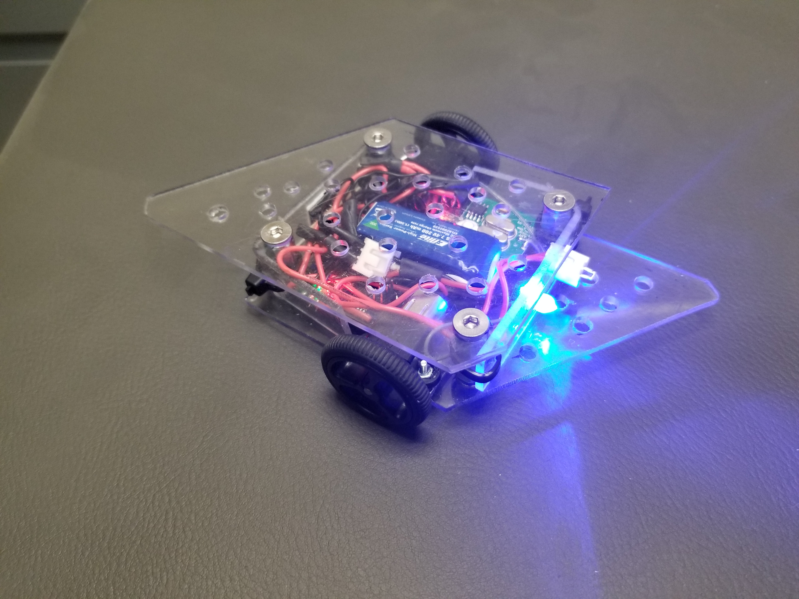

Located in San Marcos, Bobcats Robotics is proud to compete in combat robotics throughout Texas. We were founded in September of 2019 and are proud to represent the highest standards of design, construction, and operation for fighting and competitive robots. Our strength is the depth of knowledge present in the students and alumni of Texas State University. Combat Robotics presents challenges that beyond those in any other building or engineering competition. We welcome those challenges!
| Name | Thumbnail | Weight Class | Weapon | Drive | Competitions |
|---|---|---|---|---|---|
| Doozer |  | Beetle, 3lb | Bulldozer blade | 4-wheel 12v |
|
| Uncle Travelling Matt |  | Fairy, 150g | Spinning | 2-wheel 7v |
|